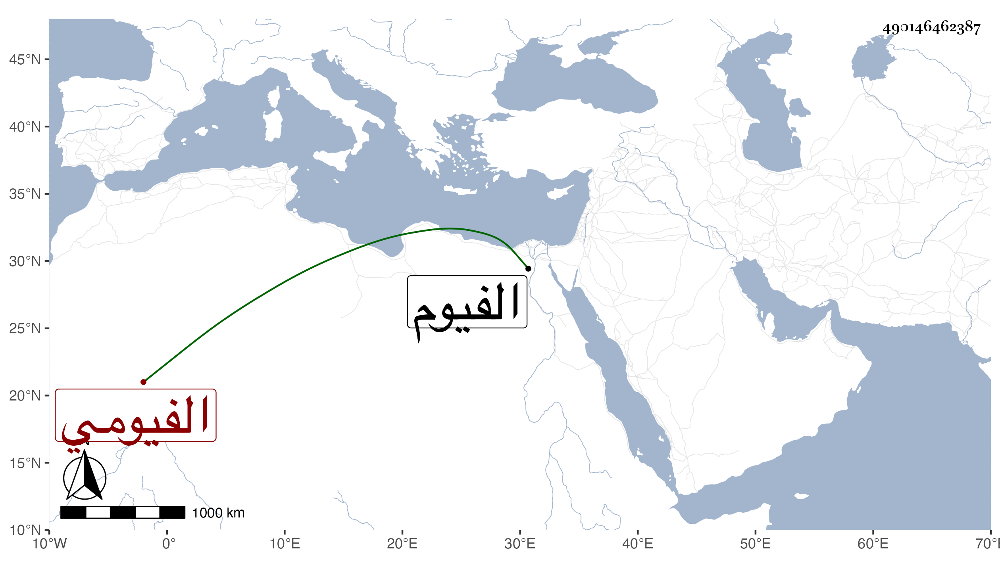

0902Sakhawi.DawLamic.ITO20230111-ara1.EIS1600.490146462387
Biography ID: 490146462387
الفيومي بفتح ثم تشديد نسبة إلى الفيوم المعروف الذي احتفر نهره يوسف عليه السلام بالوحي وعمل له سكرا بالآجر والكلس منه جماعة محمد بن أحمد بن سنجر بن عطاء الله وحسن بن علي بن سلمى إمام الزاهد والبدر محمد بن محمد بن أحمد ابن عبد النور بن خطيب الفخرية وأبوه والعز عبد العزيز بن أحمد بن محمد بن عبد الوهاب فقيه بني الكويز وأخوه الشرف محمد المدعو شريفا وبنو أولهما عمر ومحمد وزين العابدين ولعمر ابن يقال له أبو عبد الله والتاج عبد الوهاب بن الواعظ .
